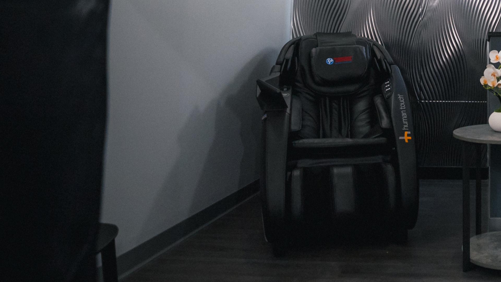
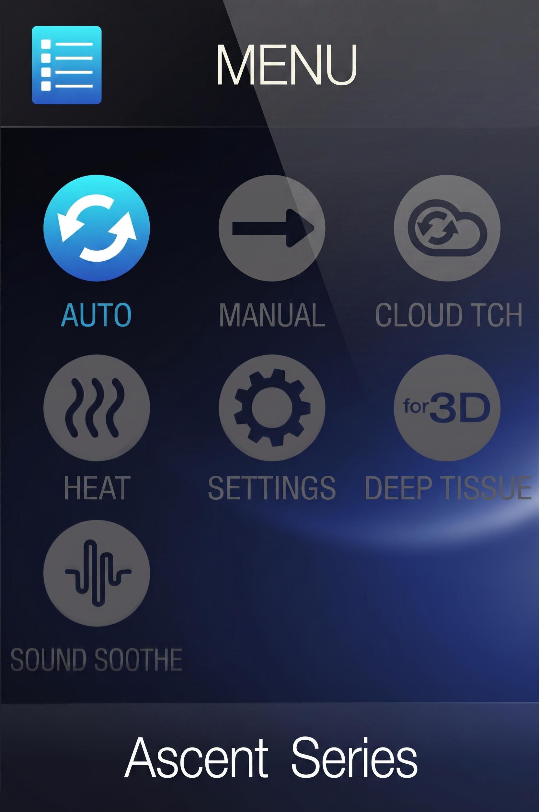
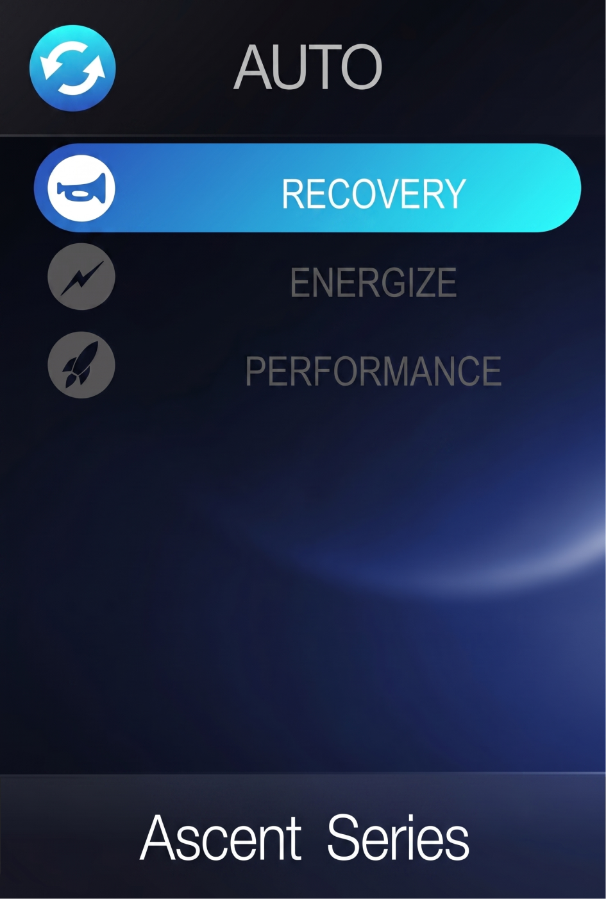
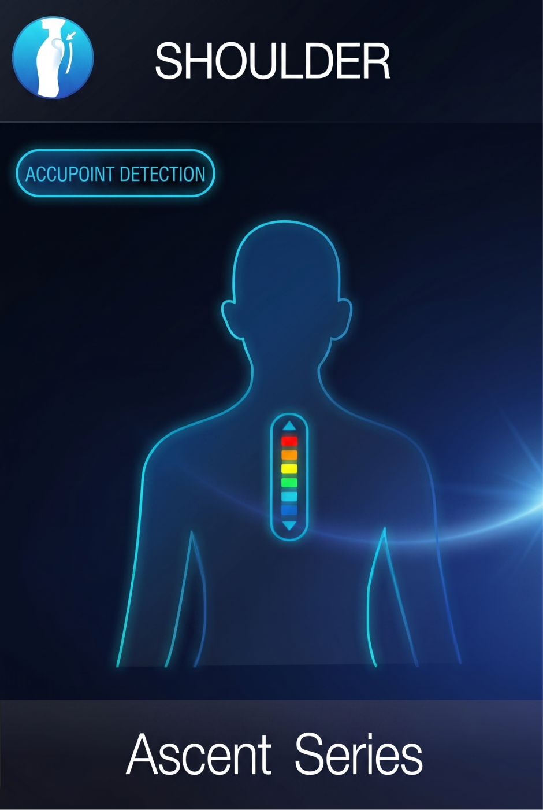
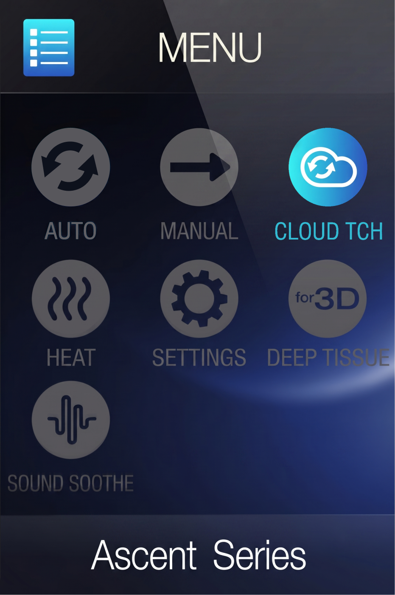

01
Benefits
Support everyday recovery with guided massage and focused pressure.

Maximum recovery and relaxation
Use the massage chair to ease tension, loosen sore muscles, and recover between workouts with a calm full-body reset.
Recommended session length:
10-20 minutesMassage chair sessions help ease tension, support recovery, and keep you moving comfortably.
Support everyday recovery with guided massage and focused pressure.
Target sore areas and help release tight muscles after training.
Relax your body and mind with a comfortable full-body massage.
Ease tension, calm your nervous system, and reset after a long day.
Make recovery part of your routine with convenient chair sessions.
Ease stiffness and help the body feel ready for the next workout.
Choose a program, let the chair scan your body, then adjust intensity as needed.

Push the red power button
Auto will already be highlighted - push ok

Choose from the auto programs and press ok
Recovery - relieves tension from the shoulders
and neck
Energize - soothes and stretches you from head
to toe
Performance - an intense air massage

The chair will begin to scan and map your massage using
AcuPoint detection
To adjust back massage roller intensity settings, return to
the Main Menu screen and toggle to and press
Settings
You can change Intensity from Soft to Strong

To adjust the air massage intensity, return to the
Main Menu screen and toggle to and press
Cloud Touch.
Select Intensity, then select the desired air intensity, or
select OFF to stop the
Cloud Touch massage
Use the chair programs and intensity settings to personalize pressure, speed, and targeted relief.